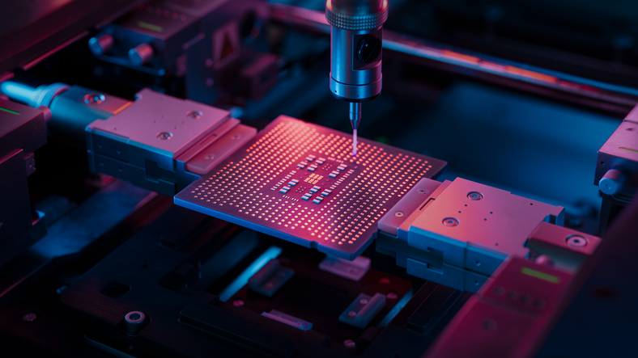

Renuncia de Jensen Huang en Nvidia

Jensen Huang, una de las figuras más importantes de la industria de la inteligencia artificial, renunció como director ejecutivo del gigante tecnológico Nvidia, según informó el consejo de administración de la empresa. Huang quedó en el ojo del huracán cuando se lo señaló por tener una relación sentimental con Alice Huang (ambos comparten apellido pero no tienen parentesco), exdirectora ejecutiva de una empresa de centros de datos con sede en Singapur. La mujer ha sido señalada como una presunta espía china. Pekín advirtió a Estados Unidos que no utilice las acusaciones de espionaje como pretexto para restringir, una vez más, las ventas de tecnología a China. El gobierno del país asiático niega los señalamientos. El ejecutivo admitió el domingo pasado haberle sido "infiel" a su esposa y pidió disculpas por haberla lastimado a ella y a sus hijos. Días después, el diario The New York Times publicó que Huang tuvo otra relación sentimental con una empleada de su propia compañía. Nvidia ya está investigando la relación que Huang ha reconocido; el FBI también está realizando sus propias pesquisas.
Ciberataque a través de Optimizely
Los ciberdelincuentes aprovecharon una vulnerabilidad para introducir código malicioso en las páginas web legítimas de al menos 178 organizaciones. Su objetivo era robar datos bancarios, cookies y criptomonedas de los internautas mientras navegaban. Por el momento, se desconoce el número de usuarios afectados. Normalmente, cuando hablamos de ciberseguridad, insistimos en la importancia de comprobar la dirección de las páginas web en las que navegamos, desconfiar de los enlaces que recibimos por correo electrónico y asegurarnos de que estamos comprando en establecimientos de confianza. Sin embargo, en ocasiones, ninguna de estas precauciones es suficiente. Este lunes, 16 de noviembre, un ciberataque consiguió introducir código malicioso en las páginas web de al menos 178 organizaciones, entre las que se encuentran compañías como IKEA, Zoom, Salesforce o el banco HSBC, así como medios de comunicación como la BBC y la CNN. Los ciberdelincuentes no tuvieron que atacar individualmente a cada una de estas empresas, sino que aprovecharon una vulnerabilidad en Optimizely, una herramienta tecnológica que todas ellas utilizaban. A través de esa brecha pudieron introducir un programa diseñado, entre otras cosas, para robar los datos de las tarjetas bancarias de los internautas mientras navegaban por sus páginas web. El ataque fue descubierto por Scott Helme, investigador de seguridad de la compañía Report URI, cuyo equipo analizó 1.611 archivos de código JavaScript y encontró contenido malicioso en 188 de ellos, correspondientes a 178 organizaciones. La firma de ciberseguridad Hudson Rock también ha encontrado evidencias de que las páginas web distribuyeron código malicioso entre sus visitantes, según recoge Reuters.
Novedades en Inteligencia Artificial y Semiconductores

La inteligencia artificial está impulsando una fuerte demanda de capacidad de computación en los últimos años. Los semiconductores son una pieza esencial de esa expansión: hacen posibles el cálculo, el almacenamiento de datos y la conexión entre los equipos de los centros de datos. Pese a ello, el sector atraviesa una corrección que refleja las dudas del mercado sobre el ritmo y la rentabilidad de las inversiones en IA.
Una tendencia que va más allá de la inteligencia artificial
La demanda de chips crece desde hace años de la mano de la digitalización. Se utilizan en cada vez más ámbitos, desde ordenadores y móviles hasta automóviles, fábricas, redes eléctricas y equipos médicos. Al mismo tiempo, las aplicaciones necesitan más capacidad de procesamiento, memoria y conectividad. La IA ha acelerado este proceso. Entrenar modelos y utilizarlos exige analizar enormes cantidades de datos. Para ello se necesitan procesadores y aceleradores, como los que desarrollan Nvidia y AMD; memorias, en las que operan compañías como Micron y SK Hynix; y chips de red que permiten conectar miles de procesadores. En la fabricación de estos componentes también intervienen empresas como Taiwan Semiconductor y ASML